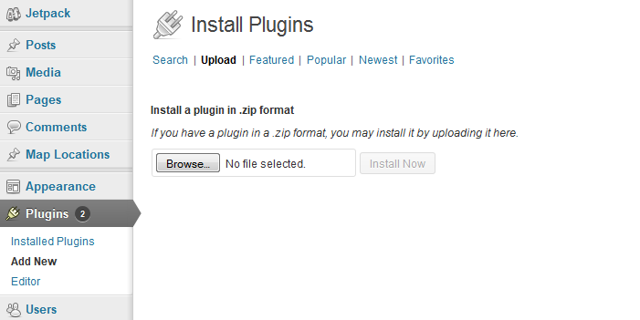
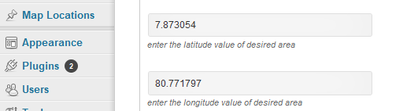
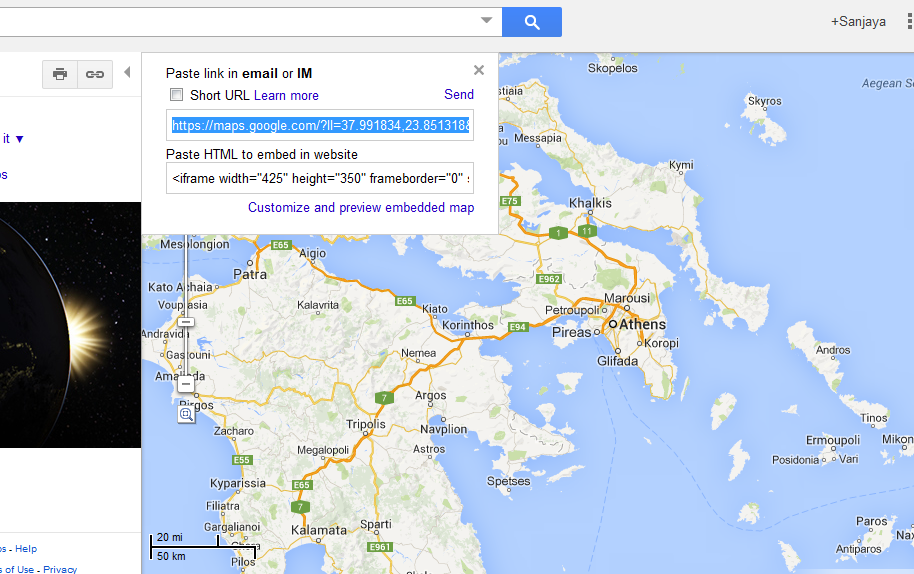
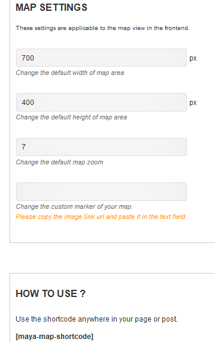
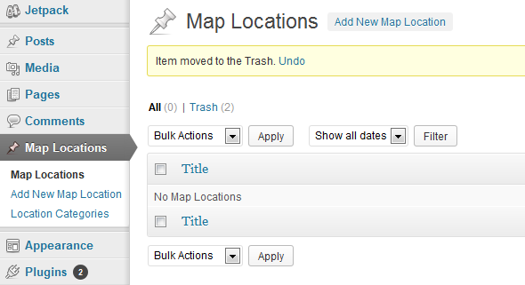
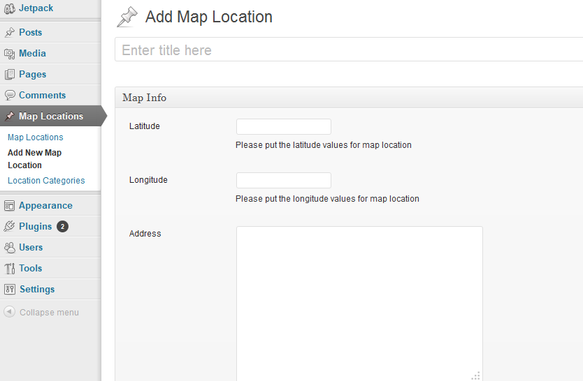
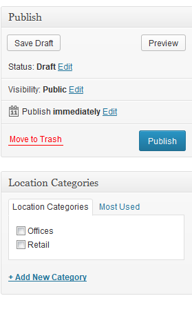
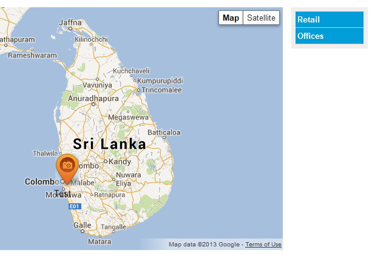
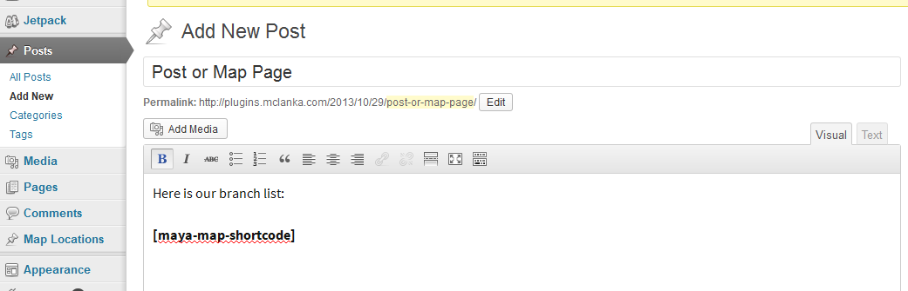
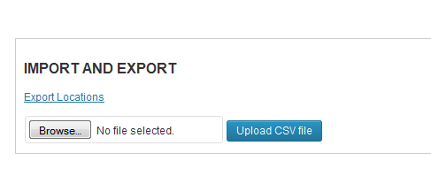

A plugin that allows to easily add and display several key points that you want to highlight in a certain region or a country.
Store & Placement locator for WordPress fills the gap of having a map based location finder for almost any requirement. Whether you want to show your branch offices, distribution locations, showrooms or pickup points this plugin helps you to conveniently visualize your network using simple shortcodes.
Just browse and upload the zip files called maya_map.zip. Then on the next screen select Activate plugin.

On the main WordPress menu go to Settings > Map-Settings

On the Global Map location area enter your latitudes and longitude values for the center of the map you want to show. You can get these values from the Google maps share link parameters as shown below.

Just copy paste the values (in the above screenshot it’s 37.991834 for latitude and 23.851318 for longitude) to the respective fields and the map will show up just below the fields.
_________________________________________________
Here you can set map width and height to be shown on the frontend with some other controls plus the shortcode to be used inside post or pages.


On the Map location menu item listed above you can see a list of current locations, add a new location or add location categories. You can also add categories when creating a Location as shown in the next screen. Adding categories is optional.
When adding a location just like before you have to give latitude and longitude values for the marker.

In addition you can define an address or a simple description of a few lines. Also the last field (Custom pointer of the location) allows you to upload a custom image (we recommend transparent .png icon) for the custom marker allowing you to differentiate a certain listing from others.
On the side you can optionally create and assign locations to categories to show up on the front end.

View on the front end:

Simply create a new page or post and add the shortcode.

The newest addtion to version 1.2. With import and Export you can import a list of locations via a CSV. All you have to do is format your CSV to match the sample and upload. The plugin will create or append the listings to existing categories, it will create new categories if they does not exist. Cool right? Also you can export the list of locations to a CSV as well.
Title, Longitude and Latitude are the only mandatory feilds.

Thank you so much for purchasing this plugin. I'd be glad to help you if you have any questions relating to this theme. No guarantees, but I'll do my best to assist. If you have a more general question, you might consider visiting the forums and asking your question in the "Item Discussion" section.